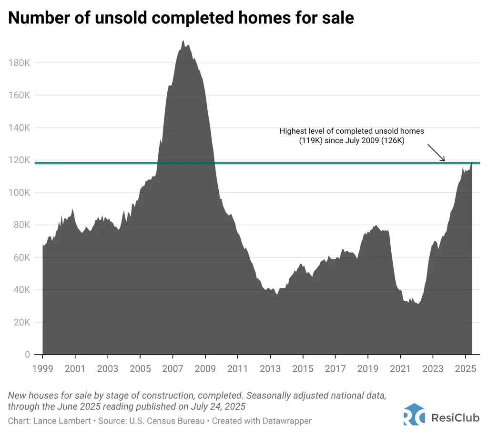
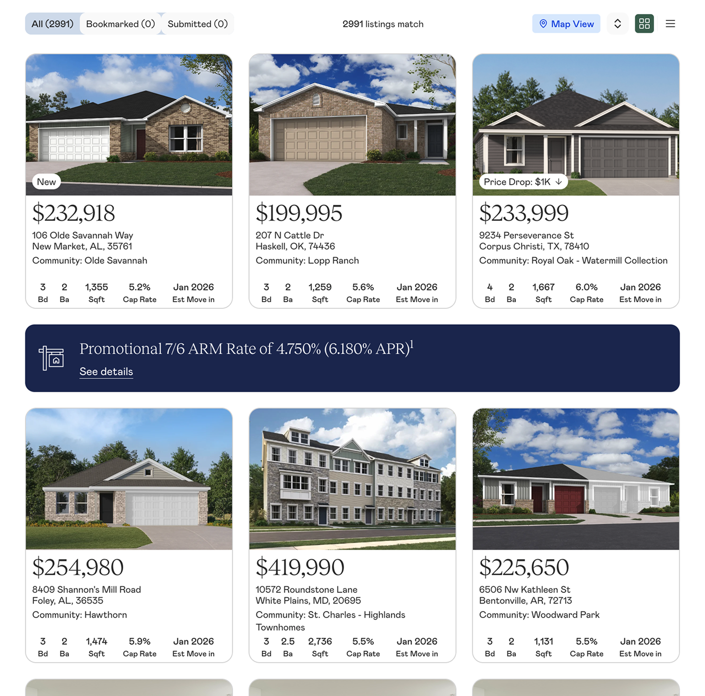

Business Context
Addressing the Housing Surplus with a Digital Product
After the pandemic, the demand for housing faded, and new home sales in the U.S. hit their lowest point since 2009. Thousands of homes Lennar had built became excess inventory. Their existing digital solution, lennar.com, was designed for owner-occupants.
Lennar identified a new possible customer base: mom-and-pop real estate investors. But reaching these investors, and converting them efficiently, required a completely new product.

User Research
Identifying Small Investors vs. Experienced Portfolio Operators
Given NDA constraints and investor availability, I employed a stakeholder-driven research approach, conducting in-depth interviews with analysts who supported investors daily. This allowed me to understand user needs, pain points, and behaviors through the lens of those closest to the users, at the cost of a filtered perspective. I implemented Hotjar post-launch to validate whether analyst-reported pain points matched actual behavior.
Through analyst interviews, I identified critical pain points that were slowing down investor purchases:
- Missing Context: Key rental investment data (property managers, tax rates, rental comps) required extra external research, further slowing down the offer process.
- Information Overload: Investors had to juggle multiple tabs and Excel spreadsheets, with irrelevant owner-occupant details or non-viable properties cluttering their research.
- Inefficient Process: Current marketplace workflows were designed for users buying a single house, with no ability to examine or bid on multiple houses at once.
As I synthesized my research, two distinct investor profiles emerged:
The Individual Investor
Adds 1–3 properties to an existing small portfolio and has less experience in the investor process. They need enough information to make a decision without being there in person, and they need to trust that the property is a sound investment.
The Portfolio Operator
Buys 5–10+ properties at a time and treats acquisitions as a structured business process. They want to evaluate many properties quickly, shortlist, and submit multiple offers in one session.
Sometimes their needs clashed: one user needed as much information as possible to feel confident; the other prioritized efficiency.
Competitive Research
Analyzing Common Industry Patterns
To inform my design decisions, I researched 20+ real estate platforms. My goal was twofold: identify unique elements that made companies stand out, and understand which UX patterns had become industry standards that users expected.
For example, one thing I focused on was visual hierarchy in property cards, since these were the primary browsing element and needed to pack detailed information into a small space. Key takeaways that guided my designs:
- Image dominance: The majority of card space was dedicated to property photos.
- Price prominence: The largest text was reserved for price or community name — yet price was usually the greater decision driver.
- Promotional overlays: Tags and badges were overlaid on images to save space.
- CTA consideration: Cards with call-to-action buttons prompted action but felt cluttered; clickable cards without explicit CTAs were cleaner and equally intuitive.

Finding What Is Missing in Real Estate Marketplaces
I analyzed 20+ real estate platforms, but three shaped my thinking most directly.
Zillow is the most successful market in the real estate industry and used by owner-occupants and investors alike. However, its property pages were designed for owner-occupants — school ratings, "Zestimate" valuations, neighborhood "feel" content. While this was useful for a family buying a home, it was completely wrong for an investor who wants cap rate and rental income.
Roofstock was the most important reference. In their investor-specific marketplace, they already surfaced cap rate front and center on every listing card. This confirmed my instinct: investors prioritize different metrics compared to owner-occupants.
Key competitive insight: No existing platform combined inventory browsing with the full financial research toolkit investors actually needed. Every platform forced investors to leave and do their own research elsewhere.

Design Challenge
Navigating Transparency vs. Clarity
The hardest problem in this project wasn't a feature, but about establishing credibility. Investors needed data to feel confident. But presenting too much data created the exact overwhelming experience we wanted to replace.
This tension was present in every design decision, especially in the investment data panel: the section of each property page showing rental comps, tax rates, property manager contacts, demographics, and occupancy trends.
The case for showing everything upfront: Investors are making financial decisions on properties they've often never visited, in markets they may not know well. If they can't see the full picture immediately, they won't trust the platform. Partial data creates doubt which in turn slows down offers. The analysts I interviewed were clear that investor confidence, not speed, was the primary barrier to conversion. Hiding data behind clicks felt like withholding it.
The case for progressive disclosure: Showing all financial data on loaded pages that looked like spreadsheets was dense, intimidating, and visually indistinguishable from the existing process we were replacing. In early explorations, the fully-expanded layout was an eyesore that users wouldn't even read. First impressions matter, and a page that looks hard to use will be abandoned in seconds.
What this tension taught me: on high-stakes transactional products, "show everything" and "reduce cognitive load" are not binary opposites, but constraints to satisfy simultaneously, through visual hierarchy. The question is not whether to show the data, but in what order and at what stage of a user's decision.
Solution
Prioritizing Easy Offer Checkout and Establishing Trust with Detailed Metrics
Integrating Investment Data in One Spot
Users were opening up dozens of tabs to answer the question, "What's the rental potential?". Now this process was replaced with every listing including features like:
- Estimated rental income, cap rate, and other financial metrics
- Property tax rates and annual amounts
- Rental comps from nearby properties
- Local property manager directory with fee structures
- Neighborhood demographics and school scores
Instead of just showing a property listing, this marketplace shows a complete investment research environment. An investor evaluating a property could now make a decision without leaving the page.

Displaying More Information Without the Clutter
I split information-heavy features into separate sections and pages to minimize cognitive overload (as opposed to the infinite scroll method seen on sites like Zillow). Investor research follows a funnel: broad search → filter by criteria → save or place offers. I sorted relevant information into these stages accordingly:
- Browse view: High-level property scanning with key metrics
- Detail view: Comprehensive investment analysis for individual properties
- Offer management: Features for tracking saved or submitted offers

Designing a Bulk Offer Flow
Experienced investors often bid on multiple properties simultaneously and accept the best response from Lennar's agents. I designed a cart-like shortlisting flow specifically for this use case: bookmark properties during research, add to a shortlist cart, and submit multiple offers in a single session with a bulk review screen.
This was designed for Group 2: the portfolio operators. What the data showed after launch: Group 1 investors (the smaller, 1–3 property buyers) were also using bulk submissions. The behavior wasn't driven by investor sophistication; it was driven by the platform making comparison and bulk submission easy enough for even casual buyers.

Testing
Surprisingly, Cap Rate Was Too Technical for Most Users
I assumed that not only was the cap rate the most important metric for investors, it was the strongest feature that our marketplace offered over others. I gave the cap rate filter a high visual prominence in the navigation bar. This design included a numeric stepper with high visual weight, positioned as the primary way to filter investment quality. Experienced investors referenced it on forum discussions and competitive platforms like Roofstock show it front and center.
At first, I thought the Hotjar data supported this claim. The cap rate filter showed high click activity, but 7 user interviews from Lennar stated that users did not know what it was. It turns out that the click activity was a reflection of a small group of users clicking the numeric stepper repeatedly, not broad adoption. Most investors weren't using it at all.
This insight also shifted a change in how we organized our two user groups. While portfolio operators (Group 2) understood cap rate and referenced it repeatedly, individual investors (Group 1) did not think in those terms. More importantly, the latter turned out to be the majority of our user base. I had designed the primary filter for the specialized minority and made it prominent at the expense of the majority's attention.
Post-launch changes: Cap rate was deprioritized visually and moved lower in the filter panel, given the same visual weight as bed count and bathroom count — useful for those who want it, not foregrounded for those who don't. The lesson: designing for your power user is right until it isn't. When your user base skews more novice than you anticipated, your information hierarchy has to follow the actual distribution, not the assumed one.

Outcomes
In the First Two Months
By combining familiar real estate patterns with investor-specific features and integrated research tools, the platform enabled investors to move from discovery to offer in a fraction of the time. Our marketplace was praised by news outlets and Lennar's CEO greenlit more resources to expand the project even further.
Reflection
What I'd Do Differently
- User testing with actual investors, not just analysts. Analyst feedback was valuable — they knew the industry and the investor pain points deeply. But analysts are not our main users. I believe some onboarding friction still exists for that user, and we didn't have the budget or timeline to recruit real investors for testing. Just one round of investor testing before launch would have surfaced issues that the analyst walkthroughs couldn't.
- Earlier pressure on the legal review. The rental comps liability concern from Lennar's legal team surfaced in June, two months into design. It required restructuring how financial estimates were presented and adding disclaimers that changed the visual design of the data panel. This should have surfaced in March, during research. The lesson: when designing financial products, loop in legal at the research phase, not the design review phase.
- A more rigorous information hierarchy framework for the data panel. The "what's primary vs. expandable" question was never fully resolved — it was negotiated round by round. I'd build that framework earlier and get alignment on it from analysts, the CTO, and Lennar stakeholders before designing the component, not after.
Version 2 is in development. Current focus: deeper visual integration with lennar.com and added features such as available property managers and loan options for users.